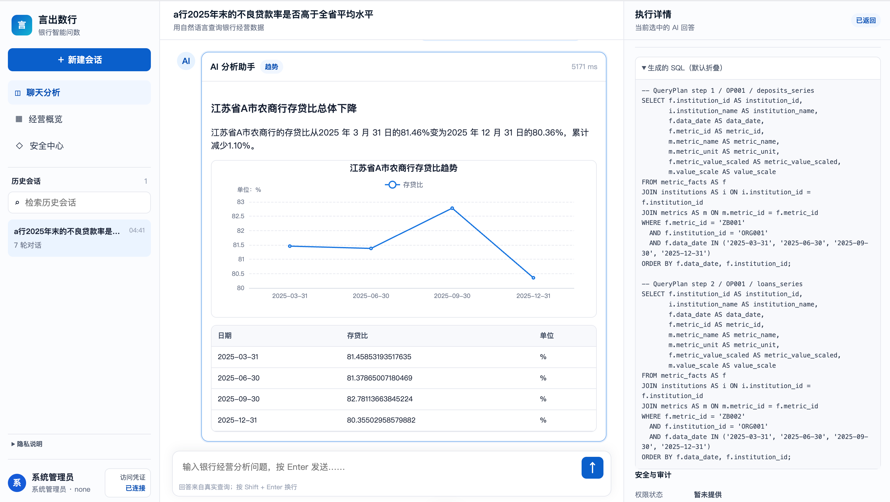

面向银行客户经理的自然语言经营分析助手——把“提需求—等数据—反复确认”的半人天流程，压缩成 5 秒级可验证的问答。
客户经理做一次经营分析，往往要在“提需求—对齐口径—查数据”的链路上反复往返。
银行并不缺数据基础，但客户经理做经营判断时，仍要经过需求确认、找表找字段、核对口径、写 SQL 和结果校验。任何一步理解有偏差，流程就要重来。
在银行这一高风险场景，先把准确率与过程可控做好，再追求更智能。
它比端到端 SQL 多一步，却让中间过程可检查。结果出错时，可以定位是自然语言理解、QueryPlan 生成、参数校验、SQL 执行还是结果展示，而不只得到一个无法追溯的错误答案。
好的体验不是堆功能，而是顺着人的真实使用路径去设计。
一句话：双路径规划 + 语义字典，让 QueryPlan 既快又稳。
QueryPlan 采用“模板匹配 + LLM 推理”双路径：高频、口径明确的查询走模板；开放、复杂的问题由受约束的 LLM 生成。
两条路径最终汇成统一的 QueryPlan。四层业务语义字典再把每个业务概念映射到确定编码，避免模型临时“理解”指标。
给相信数据的人一个可检查的结果，让每一次回答都看得见、查得清。

用户天然会连续追问，所以系统要继承已知、识别变化、失败不污染上下文。
用户天然会连续追问。
真实数据分析不是每次都重新问完整问题，而更可能是：“上海分行今年的不良贷款率是多少？”→“那北京呢？”→“换成去年呢？”→“排名怎么样？”
Intent Delta 保存最近一次成功查询的完整状态，只识别追问中变化的条件，再重构新的 QueryPlan。只有查询成功且校验通过才更新上下文；失败、指标不存在或权限不足时保留原状态，避免错误污染后续对话。这一机制可减少 80%+ 的重复输入。
口径明确、需求清晰的场景已比较稳定；复杂组合分析仍是下一阶段重点。
系统覆盖 13 家机构、21 项核心经营指标、13 万+ 业务事实，并沉淀了 5 类高频分析模板（经营分析、风险评估等）。
| 阶段 | 数据集 | 结果 |
|---|---|---|
| 开发评测 TRAIN | 120 题 | 116 条执行成功 |
| 内部验证 VAL（回归） | 40 题 | 40 / 40 通过 |
| 冻结后独立测试 TST | 40 题 | 85% 直接通过率 |
简单题与普通题共 28 题全部通过，口径明确、需求清晰的场景已较稳定；复杂组合分析仍是下一阶段重点。
在这套系统里，我同时是架构者、机制设计者、诊断者和策略制定者。
它擅长数据治理完善、指标体系统一的银行场景，也清楚自己的边界。
从模板化分析，继续向“真正理解用户意图”的 AI 分析师演进。
可靠的 AI，不靠多写 Prompt，而靠先把问题说清楚，出错时也找得到原因。
不让 AI 直接查数据，而是先整理成一份可以检查的 QueryPlan。哪里理解错了，一眼就能发现，也更容易修正。
答案不只有对和错，还要区分最佳答案、可以接受的答案，以及不确定时该如何安全回应。标准清楚，改进才有方向。
用户会接着问“北京呢”“去年呢”。系统应该记住上一轮，只处理发生变化的条件；如果本轮出错，就不影响后面的对话。
每个错误都是改进线索。系统要能看出问题出在理解、校验还是查询执行，才能更快修好，而不是只知道“答案错了”。